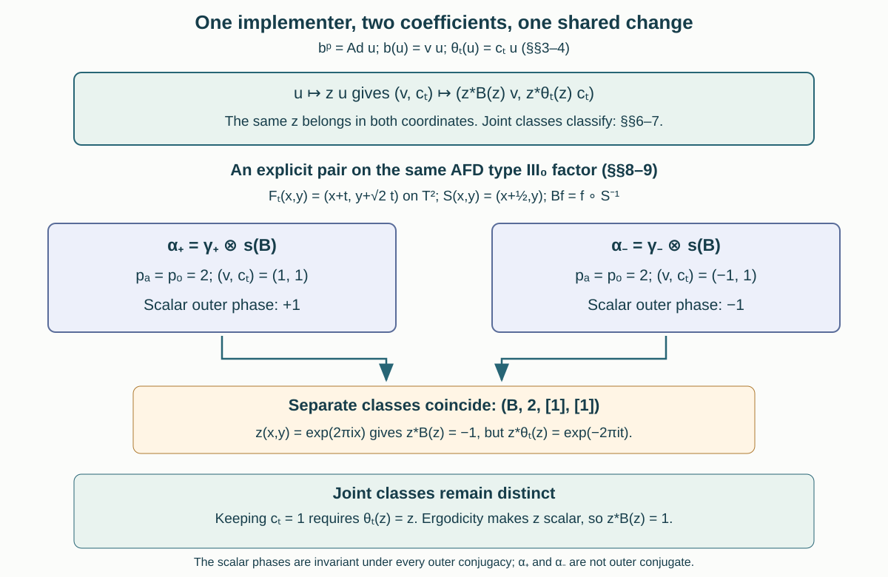

Joint obstructions and outer conjugacy
Written by GPT-6 Astra (OpenAI), Ultra. Original text and editable diagram: CC0.
At the first centrally trivial power of an automorphism, a unitary in the continuous core supplies two coefficients: one for the automorphism and one for the flow. Changing that unitary changes both coefficients together. We prove that their joint class, together with the module and the period, classifies automorphisms of a separable AFD type III zero factor. An explicit example shows why taking two separate cohomology classes loses information.
1. The classification statement
Let \(M\ne0\) be an AFD factor of type \(\mathrm{III}_0\) with separable predual. Write \(Q=\widetilde M\) for its continuous core, \(C=Z(Q)\), and \(\theta\) for the dual flow, also restricted to \(C\). Put \(A=\mathcal U(C)\). For \(\alpha\in\operatorname{Aut}(M)\), set
\[ b=\widetilde\alpha,\qquad B=b|_C=\operatorname{mod}(\alpha),\qquad \{n\in\mathbb Z:\alpha^n\in\operatorname{Ct}(M)\}=p\mathbb Z. \tag{1.1} \]Here \(p\ge0\), with \(p=0\) meaning that there is no nonzero centrally trivial power. The core-inner kernel theorem CTK01–10 identifies the set in (1.1) with \(\{n:b^n\text{ is inner}\}\). Thus, if \(p>0\), choose
\[ b^p=\operatorname{Ad}u,\qquad v=u^*b(u),\qquad c_t=u^*\theta_t(u). \tag{1.2} \]The implementer is for the \(p\)-th power, not an assumed inner first power.
Sections 3–4 prove that \(v,c_t\in A\), that \(B^p=1\), and that the pair satisfies
\[ \prod_{j=0}^{p-1}B^j(v)=1,\qquad c_{s+t}=c_s\theta_s(c_t),\qquad B(c_t)c_t^*=v^*\theta_t(v). \tag{1.3} \]The function \(t\mapsto c_t\) is strongly continuous. Define the joint class \(J(\alpha)\) using precisely the equivalence
\[ (v,c_t)\sim\bigl(z^*B(z)v,\ z^*\theta_t(z)c_t\bigr), \qquad z\in A. \tag{1.4} \]One and the same \(z\) occurs in both coordinates.
Theorem. For \(p>0\), the orbit of \((B,p,J(\alpha))\) under \(\operatorname{Aut}_\theta(C)\) is a complete invariant of outer conjugacy. For \(p=0\), the orbit of \(B\) alone is complete. The action of \(S\in\operatorname{Aut}_\theta(C)\) sends \(B\) to \(SBS^{-1}\) and sends both coefficients to their images under \(S\).
Completeness here compares existing automorphisms; it does not assert realization of every formally compatible pair. The proof uses the complete earlier characteristic-class comparison, NCA07. Section 2 verifies its analytic hypotheses for this factor class, and Sections 6–7 identify and compare its exact characteristic data.
2. The analytic hypotheses on the entire factor class
We first establish \(M\cong M\bar\otimes R\), where \(R\) is the hyperfinite finite factor with its normalized trace \(\operatorname{tr}\). The normalized-core construction FWC01–03 gives
\[ Q=C\bar\otimes R_{\mathrm{sf}},\qquad R_{\mathrm{sf}}=R\bar\otimes B(\ell^2),\qquad \tau\delta_t=e^{-t}\tau, \tag{2.1} \]with the specified center flow, and full recovery \(Q\rtimes_\delta\mathbb R\cong M\).
Tensor this system with \((R,\operatorname{tr})\). Interleaving the binary matrix sites identifies \(R\bar\otimes R\) normally and trace-preservingly with \(R\): the finite tensor identifications preserve the trace, extend by the trace-GNS unitary, and their finite unions generate both algebras. Thus \(Q\bar\otimes R\) is another copy of \(C\bar\otimes R_{\mathrm{sf}}\), with the same product trace. Its action \(\delta\otimes\mathrm{id}\) scales that trace by \(e^{-t}\) and has the same center flow.
The comparison proof FWC04–08, at these normalized product-field hypotheses, gives a center-fixing trace-preserving isomorphism and a genuine continuous unitary cocycle between the two systems. The proof compares their equal fiber trace multipliers, uses the trace-preserving fiber criterion and the strict return-cocycle comparison, and corrects the scalar defect before integrating the cocycle. It requires these two systems, not a second factor identification in advance. The same application is detailed in MLS06.
The normal crossed-product isomorphism therefore identifies their crossings. Permuting the Hilbert tensor factors in the regular representation gives
\[ (Q\bar\otimes R)\rtimes_{\delta\otimes\mathrm{id}}\mathbb R \cong (Q\rtimes_\delta\mathbb R)\bar\otimes R: \quad x\otimes a\mapsto\pi_\delta(x)\otimes a, \quad\lambda_t\mapsto\lambda_t\otimes1. \tag{2.2} \]These generator families generate both full algebras, and the inverse Hilbert permutation gives normality and surjectivity. Recovery in (2.1) now proves the asserted absorption.
Consequently CFR06, with the empty relative constraint, makes \(M_\omega\) finite of type II for every free ultrafilter. That proof constructs full matrix units in every nonzero corner, so it retains a possible center. CFR02 identifies the kernel of the action on \(M_\omega\) with ordinary central triviality, independently of the ultrafilter. Together with CTK this is exactly the core-inner kernel.
Finally MAI01–06 proves
\[ \ker(\operatorname{mod})=\overline{\operatorname{Inn}(M)}. \tag{2.3} \]Thus two automorphisms with the same module differ by an approximately inner automorphism; the same holds for each matching pair of powers. MLS01–09 supplies an actual continuous group section of the module map. These are all the factor-class inputs needed below.
3. The discrete coefficient and its quotient
Assume \(p>0\). Since \(b\) commutes with \(b^p\), the unitaries \(b(u)\) and \(u\) implement the same automorphism of \(Q\). Their quotient is central: if \(\operatorname{Ad}U=\operatorname{Ad}V\), then \(V^*U\) commutes with every element. Thus \(b(u)=vu\) for \(v\in A\). Innerness of \(b^p\) gives \(B^p=1\). Iterating the equation for \(u\) gives
\[ b^p(u)=\left(\prod_{j=0}^{p-1}B^j(v)\right)u. \tag{3.1} \]But \(b^p(u)=u\), which proves the first equation of (1.3).
For fixed \(B,p\), set
\[ Z_{B,p}=\{a\in A:N_{B,p}(a)=1\},\quad N_{B,p}(a)=\prod_{j=0}^{p-1}B^j(a),\quad D_B=\{z^*B(z):z\in A\}. \tag{3.2} \]The norm map is a homomorphism because \(A\) is abelian, so its kernel is a subgroup. The map \(z\mapsto z^*B(z)\) is also a homomorphism. Its norm telescopes to \(z^*B^p(z)=1\), proving \(D_B\subset Z_{B,p}\). Hence \(Z_{B,p}/D_B\) is a well-defined algebraic quotient. No separation property of a quotient topology is needed.
Any other implementer of \(b^p\) is \(u'=zu\) for a unique \(z\in A\). Then
\[ u'^*b(u')=z^*B(z)v. \tag{3.3} \]Thus \([v]\in Z_{B,p}/D_B\) is well defined; it is the separately defined modular obstruction in Exercise XVIII.2.4. Its invariance under inner perturbation and covariance under normal conjugacy are proved in Section 5. It is only one image of the joint class.
When \(p=0\), there is no positive return implementer. The subgroup of core-inner powers is \(\{0\}\), and its normalized implementer is simply \(T_0=1\). No finite-period norm equation or obstruction is assigned in that case.
4. The flow coefficient and the shared change of implementer
Canonical extensions commute with the dual flow, by MCC01. Thus \(\theta_t(u)\) also implements \(b^p\), and \(c_t=u^*\theta_t(u)\in A\). Strong continuity follows from that of \(\theta_t(u)\) and bounded multiplication. Applying two flow times gives
\[ \theta_{s+t}(u)=\theta_s(c_t)c_su, \qquad c_{s+t}=c_s\theta_s(c_t). \tag{4.1} \]In particular \(c_0=1\) and \(c_{-t}=\theta_{-t}(c_t^*)\).
Compute the commuting maps on the same implementer:
\[ b\theta_t(u)=B(c_t)vu,\qquad \theta_tb(u)=\theta_t(v)c_tu. \tag{4.2} \]Their equality proves the last identity in (1.3). This is a compatibility equation between the discrete and real coefficients.
Under \(u\mapsto zu\), the flow coefficient becomes
\[ c'_t=z^*\theta_t(z)c_t. \tag{4.3} \]Consequently its class \([c]\in H^1_\theta(\mathbb R,A)\) is independent of the implementer. Here the cocycles are strongly continuous and the coboundaries have precisely the form \(z^*\theta_t(z)\).
The compatible pairs in (1.3) form an abelian group under pointwise multiplication: every identity is multiplicative in the abelian coefficient algebra. The pairs
\[ d(z)=\bigl(z^*B(z),\ z^*\theta_t(z)\bigr) \tag{4.4} \]form a subgroup. The norm identity telescopes, the real cocycle identity follows by cancellation, and the mixed identity follows from \(B\theta_t=\theta_tB\). This proves that (1.4) defines a quotient group \(\mathcal J_{B,p}\).
There is a natural map
\[ \mathcal J_{B,p}\longrightarrow (Z_{B,p}/D_B)\times H^1_\theta(\mathbb R,A), \qquad[(v,c)]\longmapsto([v],[c]). \tag{4.5} \]It need not be injective. Separate equality permits two unrelated choices of \(z\); equality in the joint quotient permits one shared choice. Sections 8–9 exhibit this failure for actual automorphisms of the required factor type.
5. Inner perturbations and conjugacy
Let \(\alpha'=\operatorname{Ad}a\,\alpha\), with \(a\in\mathcal U(M)\). Its extension is \(b'=\operatorname{Ad}a\,b\), and its module is still \(B\). For \(k\ge1\), define
\[ W_k=a\,b(a)\cdots b^{k-1}(a)\in M. \tag{5.1} \]Induction gives \(b'^k=\operatorname{Ad}W_k\,b^k\). Membership in the core-inner kernel is therefore unchanged, so \(p\) is unchanged. For \(p>0\), put \(W=W_p\) and \(u'=Wu\). Then \(b'^p=\operatorname{Ad}u'\). Since \(b^p(a)=uau^*\),
\[ \begin{aligned} b'(u')&=a\,b(W)b(u)a^*\\ &=vWb^p(a)ua^*=vWu=vu'. \end{aligned} \tag{5.2} \]Every factor in \(W\) belongs to \(M=Q^\theta\), the full fixed-algebra theorem LP01. Hence \(\theta_t(u')=c_tu'\). Both coefficients are exactly unchanged for these natural implementers. Arbitrary implementers give the joint change (1.4), proving invariance of the joint class and of each separate class under inner perturbation.
Let now \(\beta=\sigma\alpha\sigma^{-1}\). Functoriality of canonical extension gives
\[ \widetilde\beta=\widetilde\sigma b\widetilde\sigma^{-1}, \quad S=\widetilde\sigma|_C\in\operatorname{Aut}_\theta(C). \tag{5.3} \]The implementer \(\widetilde\sigma(u)\) gives coefficients \(S(v),S(c_t)\), module \(SBS^{-1}\), and the same period. Applying \(S\) to (1.3)–(1.4) proves that this transports joint classes and both separate quotient groups. Thus outer conjugacy preserves exactly the orbit asserted in Section 1.
6. Reconstructing the full characteristic pair
Regard \(\alpha\) as the genuine action \(n\mapsto\alpha^n\) of \(\mathbb Z\), and let \(H=p\mathbb Z\) for \(p>0\). Choose
\[ T_{kp}=u^k\quad(k\in\mathbb Z). \tag{6.1} \]These implement all core-inner powers and have multiplication coefficient \(\mu(kp,lp)=1\). Define \(v_n\) by \(b^n(u)=v_nu\). For positive \(n\) it is \(\prod_{j=0}^{n-1}B^j(v)\); set \(v_0=1\) and \(v_{-n}=B^{-n}(v_n^*)\). Applying \(b^{n+m}\) in two stages gives, for all integers,
\[ v_{n+m}=v_nB^n(v_m),\qquad v_p=1. \tag{6.2} \]These identities also follow directly by cancelling the finite products for positive and negative indices.
The extended action on the core is \((n,t)\mapsto b^n\theta_t\). Its full characteristic coefficients, in the convention of NCA01–04, are
\[ \mu(kp,lp)=1,\qquad \lambda((n,t),kp)=\bigl(v_n B^n(c_t)\bigr)^k. \tag{6.3} \]Indeed applying \(b^n\theta_t\) to \(u^k\) gives the right side times \(u^k\). The coefficient lies in the center, so this also holds for negative \(k\). Commuting the two actions gives the equivalent expression \((\theta_t(v_n)c_t)^k\). This checks the real-time convention, rather than reconstructing only the discrete restriction.
A change \(u\mapsto zu\) changes \(T_{kp}\) by \(z^k\); (6.3) therefore changes by precisely the full characteristic coboundary. Conversely, suppose two pairs (6.3) represent the same characteristic class. The definition of equality in NCA03 supplies a normalized central family \(z_{kp}\). Because both multiplication coefficients are 1, its coboundary equation says
\[ z_{(k+l)p}=z_{kp}z_{lp}. \tag{6.4} \]It follows by induction and inversion that \(z_{kp}=z_p^k\). The characteristic change at \(((1,0),p)\) and \(((0,t),p)\) is therefore exactly the simultaneous change (1.4), with \(z=z_p\). We have proved equivalence between equality of joint classes and equality of full characteristic classes, in both directions.
When \(p=0\), \(H=\{0\}\). The normalized family \(T_0=1\) has identically trivial characteristic coefficients. There is no omitted finite-period datum.
7. Completeness and the zero-period case
First take \(\alpha,\beta\) with the same module \(B\) and period \(p\), and, if \(p>0\), the same joint class. Section 6 gives equality of their full characteristic classes. Apply NCA07 with \(G=\mathbb Z\) and \(H=p\mathbb Z\). Here is every analytic hypothesis:
- \(M\) has separable predual, and \(M_\omega\) is of type II by Section 2.
- Both core-inner kernels are \(H\), and CFR02 together with CTK makes these the centrally trivial kernels on \(M_\omega\).
- Their center actions agree: at \((n,t)\) both are \(B^n\theta_t\).
- For every \(n\), the difference \(\alpha^n\beta^{-n}\) has module 1, so (2.3) makes it approximately inner.
- \(G/H\) is finite when \(p>0\). When \(p=0\), it is \(\mathbb Z\), with the intervals \([-N,N]\) as a Følner sequence. Thus it is amenable in both cases.
The alignment construction NCA06 uses the real coefficients to put the quotients of core implementers in \(M\). The complete two-sided intertwining proof TSI01–11 then gives, after undoing the aligning cochain as in NCA07, an approximately inner \(\Theta\) and unitaries \(w_n\in M\) such that
\[ \beta^n=\operatorname{Ad}w_n\,\Theta\alpha^n\Theta^{-1},\qquad w_{n+m}=w_n(\Theta\alpha^n\Theta^{-1})(w_m). \tag{7.1} \]The original actions have cocycle 1, which gives the second identity from the full coefficient equation in that theorem. In particular the equation at \(n=1\) is the required outer conjugacy. All preceding hypotheses are also valid when \(p=0\), where Section 6 supplies the trivial characteristic class.
For equality only up to a center-flow automorphism \(S\), use the section in MLS to choose \(\sigma\in\operatorname{Aut}(M)\) with \(\operatorname{mod}(\sigma)=S\). Section 5 shows that replacing \(\alpha\) by \(\sigma\alpha\sigma^{-1}\) aligns its module and joint class with those of \(\beta\). The preceding argument applies. Necessity was proved in Section 5, so this proves the theorem.
The analytic verification also applies to normalized cocycle actions of any countable amenable group on this \(M\): if their core-inner kernels, modules and full extended characteristic classes agree, CTK, CFR and MAI supply the hypotheses of NCA07. The quotient is amenable: pull a bounded function on the quotient back to the group and apply an invariant mean; positivity, normalization and translation invariance pass directly through the quotient map. In this factor class the actions are therefore strongly cocycle conjugate. This assertion retains the full extended characteristic class; it does not replace it by separate projections.
8. An ergodic flow with an involution
Take \(X=\mathbb T^2\) with Haar probability and the point flow
\[ F_t(x,y)=(x+t,\ y+\sqrt2\,t)\pmod1, \qquad \theta_t f=f\circ F_{-t}. \tag{8.1} \]It is free: a period would have \(t\in\mathbb Z\) and \(\sqrt2t\in\mathbb Z\), forcing \(t=0\). It is ergodic. Indeed the Fourier coefficient of an invariant \(f\in L^2(X)\) at \((m,n)\in\mathbb Z^2\) must be fixed by every multiplier \(e^{-2\pi i(m+\sqrt2 n)t}\). Irrationality makes that coefficient zero unless \((m,n)=(0,0)\).
The Fourier uniqueness used here follows from the elementary approximate identity on the torus. The kernels
\[ K_N(s)=\frac1N\left|\sum_{j=0}^{N-1}e^{2\pi ijs}\right|^2 \tag{8.2} \]are nonnegative trigonometric polynomials of integral 1; outside any fixed neighborhood of 0, the geometric-series formula bounds them by \(4/(N|1-e^{2\pi is}|^2)\). Their mass there tends to zero. Translations are continuous in \(L^2(\mathbb T^2)\): first check indicators of rectangles by the measure of their symmetric differences, then finite step functions, then all \(L^2\) functions by density and the common translation norm. Finite-partition density and product integration are proved in PF37. Integrating this translation estimate against \(K_N\otimes K_N\) proves that its convolution tends to the identity in \(L^2\). Since each convolution is a finite Fourier sum, vanishing of all nonconstant coefficients makes \(f\) constant.
Every orbit is null: each bounded time segment is a line segment modulo the torus lattice, and Fubini gives planar measure zero; the full orbit is a countable union of such segments. Thus the flow is properly ergodic.
The map
\[ S(x,y)=(x+\tfrac12,y),\qquad Bf=f\circ S^{-1} \tag{8.3} \]commutes with \(F_t\), has order exactly 2, and satisfies, for \(z(x,y)=e^{2\pi ix}\),
\[ B(z)=-z,\qquad z^*B(z)=-1, \qquad z^*\theta_t(z)=e^{-2\pi it}. \tag{8.4} \]These are equalities in the full measured center algebra.
By OFR01–07, this properly ergodic standard flow is the flow of weights of a separable AFD type \(\mathrm{III}_0\) factor \(M_0\). Choose the identification of its flow with (8.1). The group section of MLS gives \(\delta=s(B)\), with
\[ \delta^2=\mathrm{id},\qquad\operatorname{mod}(\delta)=B. \tag{8.5} \]Its first power is not core-inner, because \(B\ne1\).
9. Equal separate classes and different outer conjugacy classes
The explicit finite-factor models in Finite outer period and obstruction, Section 4, Theorem 4.2 give automorphisms \(\gamma_+,\gamma_-\) of the same hyperfinite finite factor \(R\), with unitaries \(V_+,V_-\), such that
\[ \gamma_\pm^2=\operatorname{Ad}V_\pm, \qquad\gamma_\pm(V_\pm)=\pm V_\pm. \tag{9.1} \]That proof constructs \(R_1\rtimes_{a^2}\mathbb Z\), where \(a\) is an explicit aperiodic product automorphism. On the coefficient algebra both maps act by \(a\); on its crossing unitary \(V\) they act by \(V\mapsto\pm V\). Fourier coefficients prove that no first power is inner, and finite injective-factor recognition identifies the constructed algebra with \(R\). These are the proved realization hypotheses used in (9.1).
On \(M=R\bar\otimes M_0\), put
\[ \alpha_\pm=\gamma_\pm\otimes\delta. \tag{9.2} \]Section 2 gives \(M\cong M_0\), so \(M\) is a separable AFD factor of type \(\mathrm{III}_0\). We identify its core with \(R\bar\otimes\widetilde M_0\). To check this identification, for a faithful normal state \(\varphi\) on \(M_0\) the product Tomita operator has modular group \(\mathrm{id}_R\otimes\sigma_t^\varphi\), since the trace modular operator on \(R\) is 1. The full tensor modular formula is proved in TG04. The regular core construction in LP01 then gives the identification: the Hilbert permutation sends \(a\otimes x\) to \(a\otimes\pi_\varphi(x)\) and sends the real crossing unitaries to \(1\otimes\lambda_t\). Both maps are normal inverses on the generating algebras. The dual flow is \(\mathrm{id}_R\otimes\theta\).
Each \(\gamma_\pm\) preserves the normalized trace by uniqueness. The product weight has weight cocycle \(1\otimes[D\varphi\circ\delta^{-1}:D\varphi]_t\). To verify this tensor identity, apply TG04 to the trace and the balanced two-weight algebra defining the cocycle: its modular group is identity on the trace factor, so its off-diagonal modular coefficient is exactly the displayed tensor. The balanced construction is proved in GC03–04. The canonical extension formula MCC01 now identifies \(\widetilde{\alpha_\pm}\) with \(\gamma_\pm\otimes\widetilde\delta\). Thus both modules are exactly the same \(B\). Their first powers are not core-inner, and
\[ \alpha_\pm^2=\operatorname{Ad}(V_\pm\otimes1). \tag{9.3} \]CTK now gives \(p_a(\alpha_\pm)=2\), while nontriviality of \(B\) also excludes an inner first power, giving \(p_o(\alpha_\pm)=2\).
The implementers in (9.3) belong to \(M\), so their flow coefficients are both 1. Their discrete coefficients are \(+1\) and \(-1\). But (8.4) shows that \(-1\in D_B\). Hence the separately quotiented tuples are identical:
\[ \bigl(\operatorname{mod}(\alpha_\pm),p_a(\alpha_\pm), [v_\pm],[c_\pm]\bigr)=(B,2,[1],[1]). \tag{9.4} \]Nevertheless these automorphisms are not outer conjugate. Here is the distinguishing scalar invariant directly. On any factor, if \(\eta^2=\operatorname{Ad}U\), then \(\eta(U)=\zeta U\) for a scalar \(\zeta\), and iteration gives \(\zeta^2=1\). Another implementer differs by a scalar, which does not change \(\zeta\). Under \(\eta'=\operatorname{Ad}a\,\eta\), the implementer becomes \(a\eta(a)U\); the computation (5.2) gives the same scalar \(\zeta\). Normal conjugacy transports the implementer and preserves scalars. Therefore \(\zeta\) is an outer-conjugacy invariant. Equations (9.1)–(9.3) give \(\zeta_+=1\) and \(\zeta_-=-1\), proving the claim.
The joint classes distinguish them as well. A joint change sending \((1,1)\) to \((-1,1)\) would require
\[ z^*B(z)=-1,\qquad z^*\theta_t(z)=1\quad(t\in\mathbb R). \tag{9.5} \]The second condition makes \(z\) flow invariant, hence scalar by ergodicity; the first condition is then impossible. Allowing a center-flow conjugacy cannot help, because every such conjugacy fixes the scalar coefficients \(\pm1\).

The diagram records actual identities in this example. Its separate quotient map identifies the two tuples (9.4); the joint classes remain different by (9.5). The complete invariant is the orbit of the joint class from Section 1. In particular, the separate-class completeness assertion of Takesaki, Theory of Operator Algebras III, Exercise XVIII.2.4(j), with the quotients defined in parts (c)–(i), does not hold as printed. Equations (8.1)–(9.5) give the counterexample and Sections 1–7 give the precise joint replacement.
10. Worked problems
1. The first-return case. Suppose \(p=1\). What are \(B\) and \(v\), and what remains in the joint class?
Since \(b=\operatorname{Ad}u\), its center action is identity and \(b(u)=u\). Thus \(B=1\) and \(v=1\). The first coordinate of every change (1.4) is 1, so the joint class is exactly the flow-cocycle class \([c]\). This conclusion does not identify the implementing unitary with an element of \(M\).
2. Trivial flow-cocycle class. Suppose \(p>0\) and \(c_t=z^*\theta_t(z)\). What does replacing \(u\) by \(z^*u\) accomplish?
Equation (4.3) makes the new flow coefficient 1. LP01 then puts the new implementer in \(M\). Thus \(\alpha^p\) is inner. No smaller positive power can be inner, since it would be centrally trivial, so \(p_o(\alpha)=p\). Its new discrete coefficient is scalar because \(M\) is a factor, and is the ordinary outer obstruction. The joint change also transforms \(v\); that transformation cannot be omitted.
3. Why the two quotients can lose a phase. In the torus example, use the function \(z\) from (8.4) to change the pair \((1,1)\).
The result is \((-1,e^{-2\pi it})\), not \((-1,1)\). Its two separate classes are trivial because both coordinates are coboundaries, and its joint class is the original one by construction. The pair \((-1,1)\) has the same separate classes but a different joint class by (9.5). This identifies the lost compatibility information explicitly.
4. Negative subgroup indices. Verify the characteristic formula at \(k=-1\).
Since \(T_{-p}=u^{-1}\), applying \(b^n\theta_t\) gives \((v_n B^n(c_t)u)^{-1}\). The coefficient is central, so this is \((v_nB^n(c_t))^{-1}u^{-1}\), exactly (6.3). No reversal of noncommuting factors is being suppressed.
5. No centrally trivial return. If \(p=0\) and two automorphisms have conjugate modules, explain why no choice of \(u\) or scalar phase is needed in the comparison.
Use MLS to lift the center-flow conjugacy, making the modules equal. The subgroup \(H\) in NCA07 is then \(\{0\}\); its normalized characteristic data are trivial. Section 2 supplies the type II central sequence algebra and approximate-inner differences, and the quotient group is \(\mathbb Z\). Section 7 therefore gives outer conjugacy without a return implementer or a finite-period phase.
The source obligations are Takesaki, Theory of Operator Algebras III (2003), XVIII.2, Exercise 4(b)–(j), pp.328–329. Parts (b)–(i) are proved with the return power made explicit; part (j) is addressed by the counterexample and the joint classification theorem. The earlier programme proofs NCA and TSI give the full analytic intertwining argument, with free primary comparison source Toshihiko Masuda, Unified approach to classification of actions of discrete amenable groups on injective factors, arXiv:1006.1176. The finite-period models are the explicit programme construction linked in Section 9.